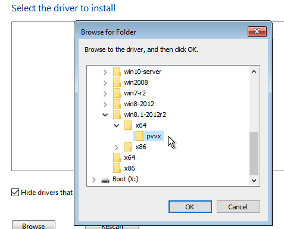

Create a Windows Virtual Machine
Create one or more virtual machines from the Virtual Machines page.
|
For creating Linux virtual machines, please refer to this page. |
How to Create a Windows Virtual Machine
Header Section
-
Create a single virtual machine instance or multiple virtual machine instances.
-
Set the virtual machine name.
-
(Optional) Provide a description for the virtual machine.
-
(Optional) Select the virtual machine template
windows-iso-image-base-template. This template will add a volume with thevirtiodrivers for Windows.
Basics Tab
-
Configure the number of
CPUcores assigned to the virtual machine. -
Configure the amount of
Memoryassigned to the virtual machine.

|
As mentioned above, it is recommended that you use the Windows virtual machine template. The |
|
The |
Volumes Tab
-
The first volume is an
Image Volumewith the following values:-
Name: The valuecdrom-diskis set by default. You can keep it or change it. -
Type: Selectcd-rom. -
Image: Select the Windows image to be installed. See Upload Images for the full description on how to create new images. -
Size: The value20is set by default. You can change it if your image has a bigger size. -
Bus: The valueSATAis set by default. It’s recommended you don’t change it.
-
-
The second volume is a
Volumewith the following values:-
Name: The valuerootdiskis set by default. You can keep it or change it. -
Type: Selectdisk. -
StorageClass: You can use the default StorageClassharvester-longhornor specify a custom one. -
Size: The value32is set by default. See the disk space requirements for Windows Server and Windows 11 before changing this value. -
Bus: The valueVirtIOis set by default. You can keep it or change it to the other available options,SATAorSCSI.
-
-
The third volume is a
Containerwith the following values:-
Name: The valuevirtio-container-diskis set by default. You can keep it or change it. -
Type: Selectcd-rom. -
Docker Image: The valueregistry.suse.com/suse/vmdp/vmdp:2.5.4.2is set by default. We recommend not changing this value. -
Bus: The valueSATAis set by default. We recommend not changing this value.
-
-
You can add additional disks using the buttons
Add Volume,Add Existing Volume,Add VM Image, orAdd Container.

Networks Tab
-
The Management Network is added by default with the following values:
-
Name: The valuedefaultis set by default. You can keep it or change it. -
Model: The valuee1000is set by default. You can keep it or change it to the other available options from the dropdown. -
Network: The valuemanagement Networkis set by default. You can’t change this option if no other network has been created. See VM Network for the full description on how to create new networks. -
Type: The valuemasqueradeis set by default. You can keep it or change it to the other available option,bridge.
-
-
You can add additional networks by clicking
Add Network.

|
Changing the |
Node Scheduling Tab
-
Node Schedulingis set toRun VM on any available nodeby default. You can keep it or change it to the other available options from the dropdown.
Advanced Options Tab
-
OS Type: The valueWindowsis set by default. It’s recommended you don’t change it. -
Machine Type: The valueNoneis set by default. It’s recommended you don’t change it. See the KubeVirt Machine Type documentation before you change this value. -
(Optional)
Hostname: Set the virtual machine hostname. -
(Optional)
Cloud Config: BothUser DataandNetwork Datavalues are set with default values. Currently, these configurations are not applied to Windows-based virtual machines. -
(Optional)
Enable TPM,Booting in EFI mode,Secure Boot: Both the TPM 2.0 device and UEFI firmware with Secure Boot are hard requirements for Windows 11.
|
Currently, only non-persistent vTPMs are supported, and their state is erased after each virtual machine shutdown. Therefore, Bitlocker should not be enabled. |
Installation of Windows
-
Select the virtual machine you just created, and click
Start. -
Boot into the installer, and follow the instructions given by the installer.
-
(Optional) If you are using
virtiobased volumes, you will need to load the specific driver to allow the installer to detect them. If you’re using the virtual machine templatewindows-iso-image-base-template, the instruction is as follows:-
Click on
Load driver, and then clickBrowseon the dialog box, and find a CD-ROM drive with aVMDP-WINprefix. Next, find the driver directory according to the Windows version you’re installing; for example, Windows Server 2012r2 should expandwin8.1-2012r2and choose thepvvxdirectory inside.  -
Click
OKto allow the installer to scan this directory for drivers, chooseSUSE Block Driver for Windows, and clickNextto load the driver.
-
Wait for the installer to load up the driver. If you choose the correct driver version the
virtiovolumes will be detected once the driver is loaded.
-
-
(Optional) If you are using other
virtiobased hardware like network adapter, you will need to install those drivers manually after completing the installation. To install drivers, open the VMDP driver disk, and use the installer based on your platform.
The support matrix of VMDP driver pack for Windows are as follows (assume the VMDP CD-ROM drive path is E):
| Version | Supported | Driver path |
|---|---|---|
Windows 7 |
No |
|
Windows Server 2008 |
No |
|
Windows Server 2008r2 |
No |
|
Windows 8 x86(x64) |
Yes |
|
Windows Server 2012 x86(x64) |
Yes |
|
Windows 8.1 x86(x64) |
Yes |
|
Windows Server 2012r2 x86(x64) |
Yes |
|
Windows 10 x86(x64) |
Yes |
|
Windows Server 2016 x86(x64) |
Yes |
|
Windows Server 2019 x86(x64) |
Yes |
|
Windows 11 x86(x64) |
Yes |
|
Windows Server 2022 x86(x64) |
Yes |
|
|
If you didn’t use the |
|
For full instructions on how to install the VMDP guest driver and tools see the documentation at https://documentation.suse.com/sle-vmdp/2.5/html/vmdp/index.html |
Known Issues
Windows ISO unable to boot when using EFI mode
When using EFI mode with Windows, you may find the system booted with other devices like HDD or UEFI shell like the one below:

That’s because Windows will prompt a Press any key to boot from CD or DVD... to let the user decide whether to boot from the installer ISO or not, and it needs human intervention to allow the system to boot from CD or DVD.

Alternately if the system has already booted into the UEFI shell, you can type in reset to force the system to reboot again. Once the prompt appears you can press any key to let system boot from Windows ISO.
VM crashes when reserved memory not enough
There is a known issue with Windows virtual machine when it is allocated more than 8GiB without enough reserve memory configured. The virtual machine crashes without warning.
This can be fixed by allocating at least 256MiB of reserved memory to the template on the Advanced Options tab. If 256MiB doesn’t work, try 512MiB.

BSoD (Blue Screen of Death) at first boot time of Windows
There is a known issue with Windows virtual machine using Windows Server 2016 and above, a BSoD with error code KMODE_EXCEPTION_NOT_HANDLED may appears at the first boot time of Windows. We are still looking into it and will fix this issue in the future release.
As a workaround, you can create or modify the file /etc/modprobe.d/kvm.conf within the installation of SUSE Virtualization by updating /oem/99_custom.yaml like below:
name: Harvester Configuration
stages:
initramfs:
- commands: # ...
files:
- path: /etc/modprobe.d/kvm.conf
permissions: 384
owner: 0
group: 0
content: |
options kvm ignore_msrs=1
encoding: ""
ownerstring: ""
# ...|
This is still an experimental solution. For more information, please refer to this issue and please let us know if you have encountered any issues after applying this workaround. |